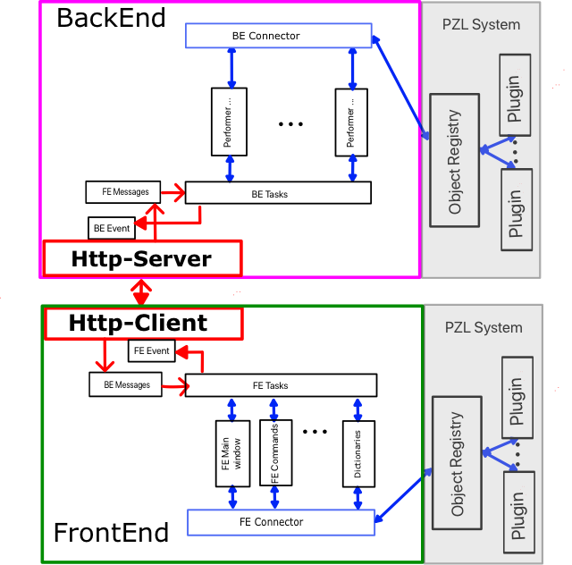

Набор шаблонов проектов Applicaion Frame (используется также название AppFrame) , может служить основой приложений, которые
Набор
шаблонов проектов Applicaion Frame создан на основании опыта
разработки проекта WorkspaceManager (WSM,
см. SpbVipTools\Bin\wsmAppData\WorkSpaceManagerRu.pdf)
Выполнено В. Юхтенко (Prolog Development
Center SPb). Консультации по http-взаимодействию оказывал А.
Басукинский.
Структура моно приложения приведена на следущем рисунке
Здесь синими стрелками показаны связи внутри BackEnd и FrontEnd соответственно, а красными - организация связи между BackEnd и FrontEnd.
Регистратор объектов ObjectRegistry является составной частью Pzl-системы.
Внутри этих структур модули получают доступ к другим модулям через BE(FE)-Connector, который обращается к регистру объектов ObjectRegistry.
События,
возникающие по инициативе противоположной стороны обрабатываются
модулями соответственно FE-Requests и BE-Responces, которые
вызывают на исполнение модули BE(FE) Tasks. Те, в свою
очередь,
обращается к
остальным модулям BackEnd (FrontEnd). Получив данные для
противоположной стороны, модуль BE(FE)Tasks посылает сообщение через
модуль BE(FE) Event. Противоположная строна подписывается на события
источника данных для нее.
Инициатором обмена данными всегда является FrontEnd, который инициирует выполнение задач в BackEnd.
Работа происходит в асинхронном режиме: отправив запрос, FrontEnd возвращается к своей работе. BackEnd, получив запрос выполняет задачу и, возможно, инициирует передачу данных во FrontEnd. Это может быть либо одно сообщение, либо последовательность сообщений, которые должны быть обработаны во FrontEnd.
Модули расширения Plug-ins являются DLL, организованными по определенным правилам и подключаются через систему PZL (PuZzle).
Такая структура приложения позволяет практически безболезненно перейти к варианту раздельных приложений (BackEnd и FrontEnd), взаимодействующих по http- протоколу, добавив и включив в работу Http-Сервер и Http-Клиент.
Структура такого приложения приведена на следующем рисунке
Client и Server сами преобразовывают данные и организуют их передачу между BackEnd и FrontEnd. При этом как FrontEnd, так и BackEnd содержат в своем составе PZL-систему:. Это обеспечивает возможность использования Plug-in (ов) как в BackEnd, так и во FrontEnd.
| xxx_MonoSDI | Шаблон SDI Моно приложения, в которм BackEnd и FrontEnd объединены в рамках одного xxx.Exe файла. Является основой для создания и отладки всех остальных вариантов SDI-приложений |
| xxx_MonoMDI | Шаблон MDI Моно приложения, в которм BackEnd и FrontEnd объединены в рамках одного xxx.Exe файла. Является основой для создания и отладки всех остальных вариантов MDI-приложений |
| xxx_pzlMono | Шаблон SDI Моно pzl-компоненты, в которм BackEnd и FrontEnd объединены в рамках одной pzl-комоненты. Может полностью выполнять все функции, предусмотренные в рамках проекта на базе xxx_МоноSDI. Помещена в одноименный PZL-контейнер. Может подключаться в качестве Plug-In к любому приложению, обладающему свойствами PZL-порта. |
| xxx_httpBackEnd | Шаблон BackEnd приложения, который может полностью выполнять функции BackEnd, предусмотренные в рамках проекта на базе xxx_Моно(SDI/MDI). Является http-сервером для клиентов на основе шаблоновxxx_httpFrontEndMDI или xxx_httpFrontEndSDI |
| xxx_httpFrontEnd | Шаблон SDI FrontEnd приложения, который может полностью выполнять функции FrontEnd, предусмотренные в рамках проекта на базе xxx_МоноSDI. Является http-клиентом для совместной работы с http-сервером xxx_httpBackEnd. |
| xxx_pzlHttpFrontEnd | Шаблон SDI FrontEnd pzl-компоненты, которая может полностью выполнять функции FrontEnd, предусмотренные в рамках проекта на базе xxx_МоноSDI. Является pzl-компонентой и может подключаться в качестве Plug-In к любому приложению, обладающему свойствами PZL-порта. Является http-клиентом для совместной работы с http-сервером xxx_httpBackEnd. |
| xxx_pzlHttpBackEnd | Шаблон BackEnd pzl-компоненты, который может полностью выполнять функции BackEnd, предусмотренные в рамках проекта на базе xxx_Моно(SDI/MDI). Является одновременно и pzl-компонентой и http-сервером для клиентов на основе шаблонов xxx_httpFrontEndMDI или xxx_httpFrontEndSDI |